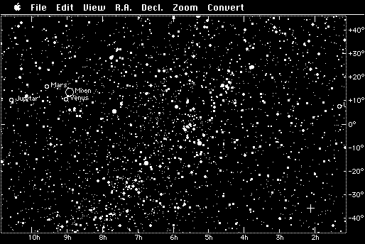

Download
StarAtlas0.8r2.zip (209K) Star Atlas 0.8r2 repackaged into a zipped hfs disk image and checksum file. The disk image can be mounted with Mini vMac.
StarAtlas0.8r2.hqx (311K) Star Atlas 0.8r2 in the original format.
copyright: Youhei Morita
mod date: Feb 24, 1994
license: free for non-commercial use
official url :
About StarAtlas
Displays positions of the stars, sun, and planets.

If you find these downloads useful, please consider helping the Gryphel Project, which hosts them.
Here are the md5 checksums for the downloads, signed with Gryphel Key 5:
--------- GRY SIGNED TEXT --------- 5ad1bfad0307c3442367f7342bc5562c StarAtlas0.8r2.zip c8e5397f8faec3340cb03aeb2d5af51c StarAtlas0.8r2.hqx ------- BEGIN GRY SIGNATURE ------- Gry/4Xa8CFcUzxdN/ETEVNGR8a5zOMJiPAIC6LvJZe8uSY2LpptP/yfL5wzsorO8 IUD03iXHi/7GUqGn3OVxRhzeRXNdDFiN/7usgRzaBPATuty2Kt4jPk9oCVOp0eb3 nK/RgEAvsRrwf2PgpPa6s9sGSiLM3Ni+H3EAYfxCJRbEazH0rxiihBETBZIMdmbz -------- END GRY SIGNATURE --------